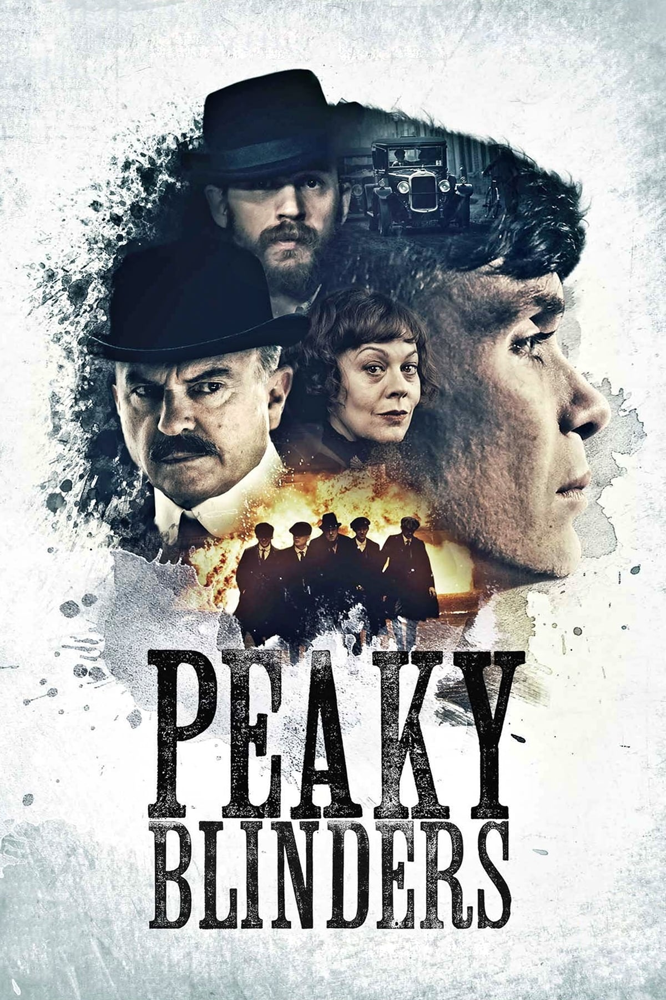

Everyone has a little darkness within, and here we review movies/shows that
highlight the other side of you.
Have you ever dreamed of what it would be like to be in the Mafia?
Or How about being the Villain in a superhero film?
Well you have come to the right place!

Peaky Blinders is a British period crime drama television series created by Steven Knight.
Set in Birmingham, England, it follows the exploits of the Peaky Blinders crime gang in the
direct aftermath of the First World War. The fictional gang is loosely based on a real urban
youth gang of the same name who were active in the city from the 1880s to the 1910s.
It features an ensemble cast led by Cillian Murphy, starring as Tommy Shelby, Helen McCrory as
Elizabeth "Polly" Gray, Paul Anderson as Arthur Shelby, Sophie Rundle as Ada Shelby, and Joe
Cole as John Shelby, the gang's senior members. Sam Neill, Annabelle Wallis, Iddo Goldberg,
Tom Hardy, Charlotte Riley, Finn Cole, Natasha O'Keeffe, Paddy Considine, Adrien Brody, Aidan
Gillen, Anya Taylor-Joy, Sam Claflin, Amber Anderson, James Frecheville, and Stephen Graham
are also starring. It premiered on 12 September 2013, telecast on BBC Two until the fourth
series (with repeats on BBC Four), then moved to BBC One for the fifth and sixth series.
Wikipedia
Wikipedia
In this series, your inner mafioso is brought to life, starring Mr. Tommy Shelby and his followers,
which the majority are his family. Tommy is this fantastic character that is always walking the line between right and wrong
and creates this dynasty in Birmingham, England. The first series is somewhat slow-to-start, getting
to know all the characters and understanding the accent. After a few episodes you are hooked,
from the gangster lingo to the outfits they wear, pretty soon you'll be acting the part.
Tommy and his brothers, John and Arthur, start to ascend the ranks in London after they take
over Billy Kimber's (a rival gang) horse races. And don't forget about the outstanding casting
of Alfred "Alfie" Solomons, played by Tom Hardy. Tom Hardy and Cillian Murphy make this series
in my opinion.
The second season then has them expanding into the South and North, and it gets even more
dangerous and heart-pounding during the third season where they start to expand internationally
by getting involved with the Russians.
The fourth season brings the Italians from the New York mafia across the pond, played by the
fantastic Adrian Brody, and finishes with a ton of drama. The fifth season starts to get more
political, and even more exciting, when the Fascists come in to play, and Tommy becomes a
politician.
The sixth and final season will have you on the edge of your seat the entire time, especially
knowing it is the last. I would highly recommend watching this entire series, and you won't be
disappointed.